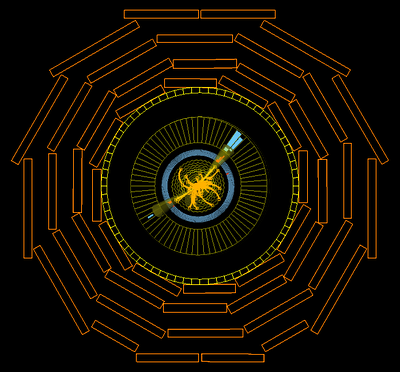

| A jet is a spray of particles represented by a yellow cone coming out of the center with lots of yellow tracks. This event has two jets (a so-called "dijet event"). Also notice the red and blue color bars in the electromagnetic and hadronic calorimeters, respectively. These indicate the presence of both electrons and hadrons. | ||||||||
|  | ||||||||
|
||||||||